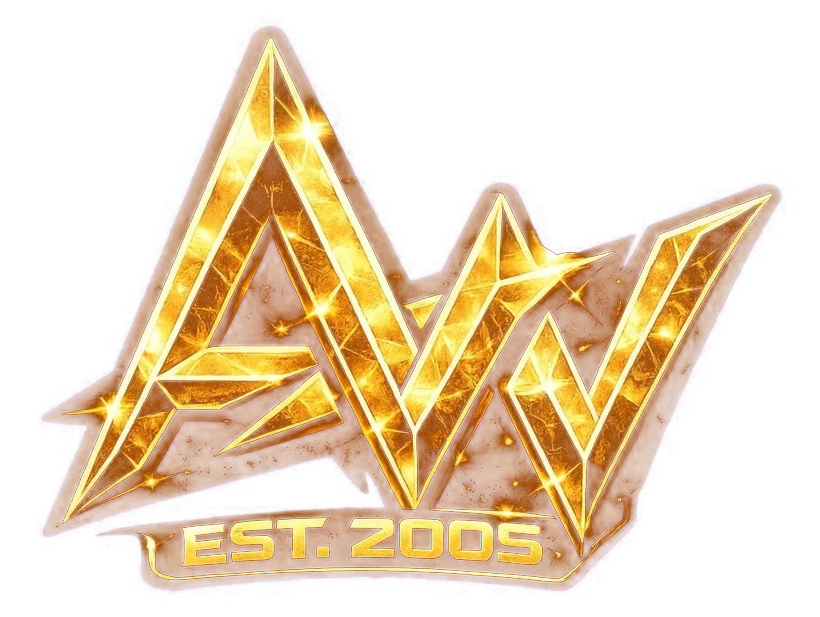

Trade withcharacter.
Welcome to the Worldwide Winning Wolves team. Technical analysis, Forex and CFD signals and private one-on-one mentorship from Mr Alien Wolf #1, delivered in a private Telegram channel.
4.9 on Trustpilot, 155 reviews
Rated 4.9 out of 5 on Trustpilot
155 members have reviewed Alien Wolf 3D Vision on Trustpilot. 99% of them gave five stars.
Screenshots of member reviews on Trustpilot
Price action, trend lines and the hedge trade
My system is built on reading charts through price action. It lets me see clear entry points for sells and buys across the currency pairs of the Forex market.
In the private Telegram channel I analyse the charts through my trend lines and execute my hedge trade strategy, which keeps a position working in both the up move and the down move of the chart in question.
When you understand completely how the game works, after years in this tough and volatile market, it becomes rare to end the trading day with a negative result. Flexibility, consistency, experience.
Read what members say“There are wolves who lead sheep, and there are wolves who lead wolves.”
One system, the same four steps every time
Read and re-read this section so you open the signals correctly: how to open positions, update the stop loss and handle hedge trades. Tap a step to see it on the chart.
Red icon. Open both levels as fast as possible.
Red icon. Re-enter with the levels of the earlier signal.
Orange icon. Delete the trade immediately.
News on a running trade. Not a new signal.
The full signal guide
Opening a signal when it arrives
You must always open two trades per received signal:
- First level: one trade at market price.
- Second level: one pending order.
- Stop loss: always the same stop loss for both orders.
These steps should be executed as quickly as possible. The Forex market moves very fast, so you need to be fast too.
Why the signals use two levels
The two levels are strong zones of price reversal (supply and demand). The price can begin its reversal at level one, or it can go on to level two and start a strong reversal from there. Working with both levels gets us into a trade at the best possible price.
Setting the first stop loss
A common question from new members is how to set the stop loss when a new signal arrives in the Premium and VIP room. A new signal has two order levels: the first is opened at market price, the second is a pending order.
Always enter the same stop loss for both orders, and measure it from the first level. If the stop loss is 100 pips, it is 100 pips from level one.
Moving the stop loss to the entry point
When a signal reaches +40 pips, it is a rule to always move the stop loss to the trade's entry point. This protects the position: if the market reverses, the trade is closed with zero loss.
When you move the stop loss to break-even, the pending orders on level two must be cancelled and removed.
Take profits and targets
The system is built to get the most out of one move, which is why we run and maintain two trades per signal.
- First trade, first target: always close it when it reaches +100 pips.
- Second trade: always keep it open, with no take profit. It protects the hedge trade of a future signal.
Make it simple and stick to the rules of the system.
“Valid again” messages
Signals are often cancelled a few minutes after they are sent and can become valid and useful again a little later. This is part of the strategy to always get the best entry into a trade.
When a previously cancelled signal is valid again, make a new entry with the same levels that were sent before.
Tip: whenever a signal is sent, save the text somewhere easy to reach on your phone, tablet or PC. When it becomes valid again you can look up the entry levels, target and stop loss and put the trades back into your MT4 or MT5 account.
Cancelled signals
When a signal is cancelled you always receive a warning with an orange icon. Close and delete the open trade from your MT4 or MT5 account immediately, without hesitating.
Never leave the trade open after a cancellation message. Following every rule and instruction correctly is what the system depends on.
Signal updates are not new signals
New members often ask whether update messages are new signals. They are not. These messages are updates on trades already in progress, a few hours or a few days after the signal.
Updates often come with instructions to take partial profits from your trades.
Hedge trade signals
In my signal system I regularly open hedge trades: a new trade in the opposite direction while the second trade of an older signal is still open. The older trade protects the hedge that is opened later.
- First level: trades at market price.
- Second level: pending orders.
- Stop loss: the same stop loss for both levels.
Hedge rule: do not take a hedge signal if you did not open the previous signal in the opposite direction. Hedge signals appear with red icons.
Stay connected to the premium channel so you do not miss any signals. That is the only way to follow the system correctly.
Technical support for members
Paid and VIP members have a direct support line on Telegram for questions about how the signals should run in their account.
Risk management, patience and fundamentals
Your risk management skills decide who you are in this market: winner or loser.
The importance of risk management
One of the ground rules of risk management in the Forex market is that you should never risk more than you can afford to lose. It sounds obvious, yet this mistake is extremely common.
When a trader realises a mistake, the job is to leave the market with the smallest loss possible. You should have a well-tested trading plan that includes every detail of your risk management.
Forex trading carries a high level of risk and is not the right discipline for every investor. Forex is a financial market, not a bank account.
If you use risk management rules you stay flexible, and can open extra trades on different pairs.
Only risk 1% per signal
The 1% rule means never risking more than 1% of your account on a single trade. It does not limit the size of the position; it limits what you lose if the stop is hit. It protects your capital when you are not trading well or when market conditions are tough.
Why patience matters for a trader
Patience is a necessary ingredient of successful trading, probably the most important one. It is also the virtue most traders lack, which helps explain why most of them fail to make consistent money.
Patience matters because it raises your accuracy, your strike rate. You wait for the setup instead of chasing the market.
How to trade with patience
Being a patient trader can mean you only trade four times a month. Swing trades need a lot of patience: you wait for price to reach your zone, and once you are in profit you let the trade run instead of closing it early.
Patient and calculating are the most important qualities of a good Forex trader.
Fundamental analysis: the reason behind the move
Technical analysis shows where and when to enter. Fundamental analysis explains why a currency moves: interest rates, inflation, employment data and the decisions of central banks.
In the channel you learn how to use fundamentals to support your technical view, not to replace it. When the chart and the fundamentals point in the same direction, the setup is stronger.
What to watch
- Central bank decisions and interest rates
- Inflation and employment reports, such as CPI and the US jobs report (NFP)
- Political events and risk sentiment
- How markets move each other: the US dollar, gold, oil and stock indices
Check the economic calendar before you trade. Around major news the market moves fast and spreads widen, so stick to your stop loss and the 1% rule.
Start free. Go premium when you are ready.
Free Channel
Get to know the professional level of our work on the public channel. You see the results of our trades, analysis and the testimonials of paying members. No live signals are published here.
- Results of closed trades and analysis
- Testimonials from paid members
Premium Channel
In the paid channel you have access to all signals in real time. You learn about risk management and emotional control, and how the Forex market really works.
- All live signals and updates
- Hedge trade strategy
- Direct chat support for VIP members
Two ways into the premium channel
Option 1: 50% off with our partner broker
- Open a live trading account through our partner link with a minimum deposit of 1,000 USD. Being an active trader is a must.
- Send us your account ID on Telegram.
- Pay only 50% of the monthly fee and get added to the channel.
Option 2: full fee, your own broker
- Keep the broker you already use. No account under our affiliate is needed.
- Pay the full membership fee.
- Message us on Telegram to be added to the channel.
Payment methods: PayPal, Skrill and Western Union. Paying by Western Union adds one free week (not for weekly subscriptions). Contact us for the payment details.
Mr Alien Wolf #1
We are a team formed by disciplined traders, led by Mr Alien Wolf #1, known to the pack as The Legendary. He has learned and traded this market since 2005.
Technical analysis in price action is an art. With one look at the chart he reads who is in control of price and volume, and shares that view with the team every day.
“When you understand the game, it is rare to end the trading day in negative results.”
Before you join
What do I need to get started?
The Telegram app to receive the signals, and a trading account to place the trades. The signals work with MetaTrader 4 and MetaTrader 5 (MT4 and MT5).
Do I have to use your partner broker?
No. With your own broker you pay the full fee. With a live account through our partner link you pay 50%.
Does the free channel include live signals?
No. The free channel shows results, analysis and member testimonials. Live signals are only sent in the premium channel.
How often are signals sent?
There is no fixed number. The approach is to trade smart, not often: we wait for the setup, and swing trades can run for days.
How much should I risk per signal?
No more than 1% of your account on a single signal. On a $30,000 account that is $300.
Are profits guaranteed?
No. Forex and CFD trading carries a high level of risk and you can lose money. Follow the rules, use the stop loss and only trade with money you can afford to lose.
Where can I see past results?
In the free Telegram channel and in the member reviews on Trustpilot.